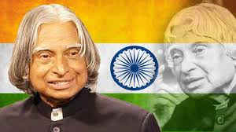

The 11th President of India (2002-2007)

Dr. A.P.J. Abdul Kalam served as the 11th President of India from July 25, 2002, to July 25, 2007. His presidency marked a period of inspiration and transformation, as he brought his unique blend of scientific knowledge, vision for the country, and humble personality to the highest office in India. Often referred to as the "People’s President," Kalam became a symbol of hope, integrity, and aspiration for millions of Indians, especially the youth.
-
Election as President
Dr. Kalam was nominated for the presidency by the National Democratic Alliance (NDA), led by Prime Minister Atal Bihari Vajpayee. Despite being a non-political figure, Kalam’s stature as a scientist and visionary made him a unifying candidate, earning widespread support from various political parties. He won the presidential election by a vast majority, reflecting his widespread popularity and respect across political lines. -
A People's President
Dr. Kalam's presidency stood out because of his ability to connect with the common people. Unlike most presidents who operated behind the formalities of office, Kalam reached out directly to students, citizens, and intellectuals, emphasizing the importance of education, science, and youth empowerment. His approachable and down-to-earth demeanor made him beloved by citizens, who often saw him as one of their own, even while he held the highest constitutional position in the country. -
Focus on Youth and Education
Dr. Kalam was passionate about the role of education in shaping India’s future. As President, he traveled across the country, visiting schools, colleges, and universities, where he interacted directly with students, encouraging them to dream big and work hard. His speeches during these visits emphasized the importance of innovation, scientific research, and national development. He inspired young people to see themselves as future leaders who could transform India into a developed nation. -
Vision for India’s Future
During his presidency, Dr. Kalam continued to advocate for his long-term vision for India, which he called Vision 2020. This ambitious blueprint aimed to transform India into a developed country by focusing on areas such as: - Technological innovation
- Agricultural and rural development
- Energy security
- Education and healthcare
- National security His presidency was not just about ceremonial duties; he used his platform to push for policies that aligned with his vision for India’s future growth.
-
A Symbol of Integrity and Simplicity
Dr. Kalam’s tenure as President was marked by his personal integrity and simple lifestyle, which endeared him to the people. He was known for living modestly, refusing the typical presidential luxuries, and always prioritizing the country over personal gain. His selfless approach to public service stood as a powerful contrast to the often criticized political environment, making him a symbol of ethical leadership. -
Key Decisions and Initiatives
Although the role of the President in India is largely ceremonial, Dr. Kalam made important contributions during his term: -
Signing of Bills and Legislation:
As the constitutional head, he was responsible for approving critical legislation, including bills related to national security and the economy. -
Return of the Office of Profit Bill:
In 2006, Dr. Kalam made headlines by sending back the "Office of Profit Bill" for reconsideration by Parliament, citing the need for further clarification on its provisions. This rare act demonstrated his willingness to exercise his constitutional powers with careful consideration. -
Post-Presidency Legacy
After completing his term as President in 2007, Dr. Kalam returned to his passion for education and youth empowerment. He declined numerous offers to return to a political career and instead focused on teaching, writing, and inspiring students across the country. His time as President left an indelible mark, not only because of his actions but because of the values he represented: humility, intellect, and service to the nation. -
Recognition and Love from the People
Dr. Kalam's term as President significantly altered how the role was perceived. He became the first Indian President who was able to genuinely connect with the masses, and he gained enormous respect, even after leaving office. His presidency is often seen as a model of ethical governance, where public service is rooted in a deep sense of responsibility and selflessness.